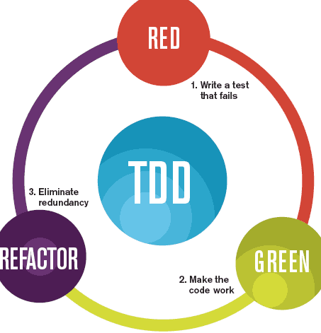
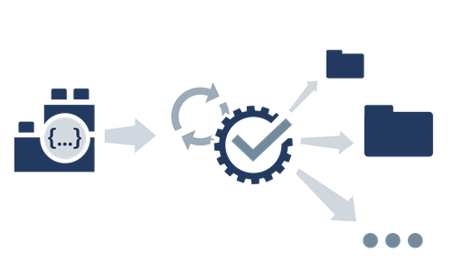

Test Driven Development

Testing is now considered an integral part of the programmers job. TDD is a technique that promotes reasonable simple unit test as precursor to implementation, significantly enhancing the robustness of the classes under test.
First Tests

The essential elements of TDD are fairly easy to grasp. The support libraries (xUnit) are relatively straightforward, and we can expect our IDE to provide direct assistance to using these libraries. Here we look at the facilities Eclipse provides to the JUnit library.
Pragmatic Testing

One way of becoming familiar with TDD is to explore some simple examples of various strategies that might be employed in some simple examples. Here we look at useful examples from the Pragmatic series - which laid out much of the early exploration of TDD.
TDD & APIs

Accessing http and the donations api can be encapsulated in purpose built classes. We can then simplify the tests significantly, and expand them to be a more comprehensive exercise of the API.
Lab-13 Tdd

Expand the rudimentary test from the last lab into a more comprehensive suit of tests, exercising the api in depth.